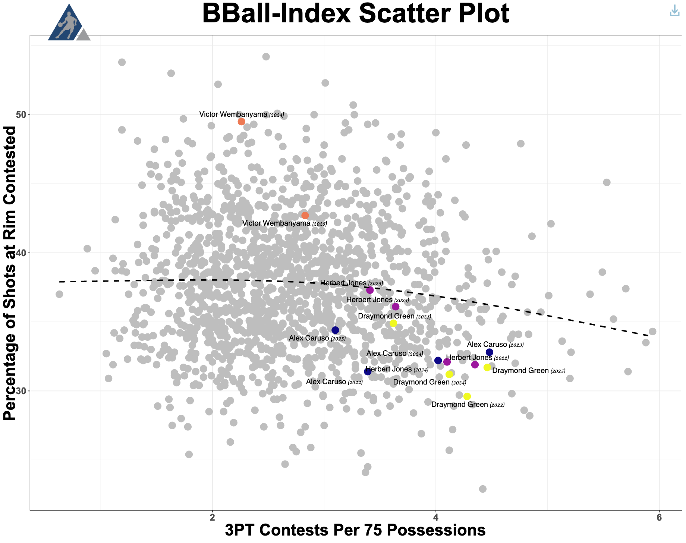

Sara Miller and Aroan Saha recap the Australian Open and the Indian Wells.
SAGB Data Journalism
Storytelling the complex world of numbers in the universal language of sports.
Josh Hart: Hart and Soul of the New York Knicks
Gabriel Adorable
When playing public runs, people often like to draw comparisons between themselves and their NBA counterparts. Some people say they play like Kyrie Irving, others may say they play like Klay Thompson, but one of my friends had an interesting player comparison for me: Josh Hart... Continue Reading

Beyond Whiffs: Rethinking Pitch Value with BBQ+
By Chris Song | May 22, 2025

Handedness Comparison in Baseball
By Jack Bruvold | June 2, 2025